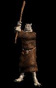

|  |
Harnessing dark powers from deep underground, the Orc Wizards enforce the mandates of their chieftain, such as extermination of the enemy shadow beasts. How the orcs came upon the powers of magic is unknown, but the thought of man's greatest enemy armed with arcane power is enough any warrior queasy.
|
||||||||